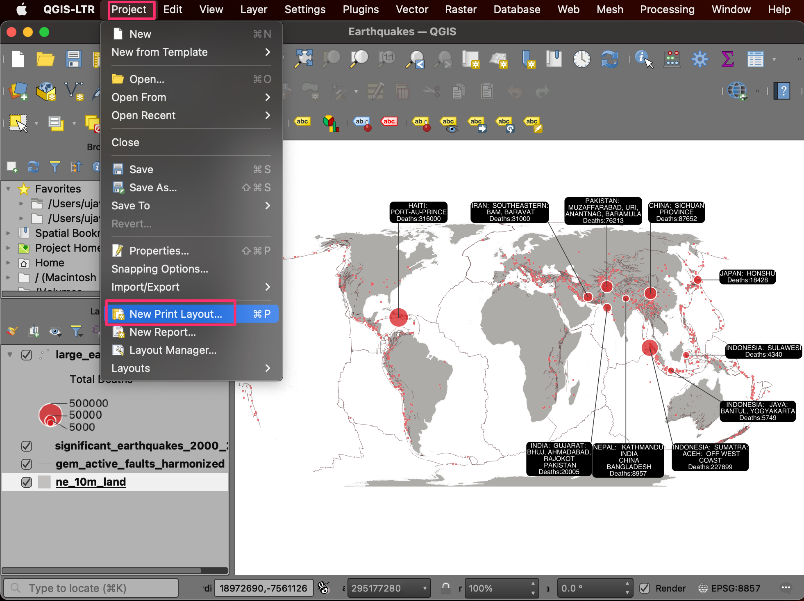

Introduction to QGIS (Full Course Material)
A Comprehensive Introduction to Mapping and Spatial Analysis with QGIS.
Ujaval Gandhi

Introduction
This is an introductory course that covers QGIS from the very basics. You will learn to use QGIS for mapping, spatial data processing, and spatial analysis. This class is ideal for participants with a basic knowledge of GIS and who want to learn how to use QGIS to carry out everyday GIS tasks.

Software
This course requires QGIS LTR version 3.28.x.
Please review QGIS-LTR Installation Guide for step-by-step instructions.
Get the Data Package
The exercises and challenges in this course4 use a variety of
datasets. All the required datasets are supplied in the
introduction_to_qgis.zip file. Unzip this file to a
directory - preferably to the
<home folder>/Downloads/introduction_to_qgis/
folder.
The data package also comes with a solutions folder that
contain model solutions for each section.
Download introduction_to_qgis.zip.
Configuration and Setup
Enable Required Toolbars
We will be using several toolbars in this course. To ensure you have the required tools for the exercises, go to View menu, select Toolbars and ensure that the following toolbars are checked.
- Attributes Toolbar
- Data Source Manager Toolbar
- Digitizing Toolbar
- Label Toolbar
- Map Navigation Toolbar
- Project Toolbar
- Selection Toolbar
- Snapping Toolbar

Install Required Plugins
We will be using the following plugins during the course. Go to From the Plugins menu, choose Manage and Install Plugins…. Under the All tab, search for the plugin name and click on the Install Plugin button to install it.
- QuickMapServices
- QuickOSM


1. Creating Maps
This section is designed to help you get familiar with the basic workflow of importing data layers, applying symbology, adding labels, and designing layouts for maps. We will take a text file containing historical records of earthquakes and turn it into an informative visualization like the one below.

1.1 Importing Vector Data
- Open QGIS. The first step is to import the source datasets. Click on the Open Data Source Manager button.

- Select the Vector tab. Click the … button next to Vector Dataset(s) and browse to the data directory.

- Select the
ne_10m_land.shpfile and click Open. In the Data Source Manager window, click Add.

- A new layer,
ne_10m_landwill be added to the Layers panel and displayed on the Canvas. This layer contains polygons representing the land areas of the world. Click on the Open Data Source Manager button again.

- Click the … button next to Vector Dataset(s) and
browse to the data directory. Select the
gem_active_faults_harmonized.gpkgfile and click Open followed by Add.

- A new layer,
gem_active_faults_harmonizedwill be added to the Layers panel and displayed on the Canvas. This is a global layer containing lines representing all the active faults. We will now import another layer of earthquake points. Click on the Open Data Source Manager button again.

- Select the Delimited Text tab. Click the … button
next to File name and browse to the data directory. Select the
significant_earthquakes_2000_2020.tsvfile. This is a text file in the Tab-Separated Values (TSV) format. In the File Format section, select Custom delimiters.
Note: Windows users may need to change the File Type as All in Choose a Delimited Text File to Open dialog to see the TSV file.

- Check the Tab checkbox. In the Geometry Definition section, ensure Longitude is selected as the X Field and Latitude is selected as the Y Field. Choose EPSG:4326 as Geometry CRS. Leave other options to their default values and click Add.

- A new layer,
significant_earthquakes_2000_2020will be added to the Layers panel and displayed on the Canvas. This layer contains over 1000 records of significant earthquakes recorded between 2000 and 2020. Right-click on thesignificant_earthquakes_2000_2020layer and select Open Attribute Table. Examine all the attributes and their values.

- We will now learn about some of the tools to query and select records. From the Selection Toolbar, click the Select Features by Value… button.
Note: If the selection toolbar is not enabled, right-click on the toolbar panel and check Selection Toolbar.

- In the Select Features dialog, enter 2020 as the Year and click the Select Features button. You will see all earthquakes that occurred during 2020 will be highlighted in yellow. You may also click the Flash Features button to see the selected records blink.

- Let’s refine the query a little more. Enter 7 as the Mag parameter and set the criteria as Greater than (>). Click Select Features. You will now see only those points where the earthquake occurred in 2020, and its magnitude was greater than 7. Close the window.

- Right-click on the
significant_earthquakes_2000_2020layer and select Open Attribute Table. You will see that there are 6 selected features in the layer. If you want to examine their attributes, there is a handy shortcut. Click the Move selection to top button.

- All the selected rows will be displayed on the top of the attribute table - making it easy to examine the selected features. Click the Deselect all features from the layer button.

- For our map, we need another layer of 10 largest earthquakes - so we can style it differently than other earthquakes. For our visualization, we will define the largest earthquakes like the ones that resulted in the highest number of deaths. Locate the Total Deaths attribute and click twice on the column header. This will sort the features in descending order of the values in this column.

- Hold the Shift key and select the first 10 rows. This selection will be the 10 earthquakes with the high fatalities.

- We will save the selected 10 features as a new layer. Right-click
the
significant_earthquakes_2000_2020layer and go to Export → Save Selected Features As...

- Select GeoPackage as the Format. Click the
… button next to File name and browse to the data
directory. Name the layer as
large_earthquakes.gpkg. Click Save. Click OK.

- A new layer,
large_earthquakeswill be added to the Layers panel.

- Our data preparation is now complete. Let’s save our work. Go to Project → Save. Browse to the data directory and enter the name as Earthquakes. Click Save.

- The project will be saved in the QGZ format as a file.

We have now finished the first part of this exercise. Your output
should match the contents of the
Earthquakes_Checkpoint1.qgz file in the
solutions folder.
1.1.1 Challenge
Do you know about Null Island? The
ne_10m_land contains a polygon for this feature. Locate
this polygon on the map.
Hint: Open the attribute table, find and select the feature for Null island. Then use the Zoom map to the selected rows button.
1.2 Symbology
The symbology of a layer is its visual appearance on the map. We will now learn different techniques for styling each layer to convey the information visually.
- Select the
ne_10m_landlayer and click Open the Layer Styling Panel.

- We will style this layer with a simple grey color. Click Simple Fill to reveal more options. Click the dropdown next to Fill color.

- Use the color picker to select a light shade of grey color. The Layer Styling Panel is interactive, so you can immediately preview your styling changes in the map canvas.
- Similarly, change the Stroke color to white.

- Next, we will style the faults layer. Select
gem_active_faults_harmonizedlayer in the Layers panel. Click the Simple Line symbol to reveal more styling options. Change the Color to a shade of brown. Set the Stroke width to 0.1.

- Now we will change the style of the earthquake points. Select the
significant_earhtquakes_2000_2020layer. Click the Simple Marker symbol. Change the Size option to 0.7 Millimeters. Select red as the Fill color and white as the Stroke color. Change the Stroke width to 0.1.

- We have now styled the three background layers. We will style the
large_earthquakeslayer, which features the main information we want to convey through this map. We will use a Proportional Circle style and have the size of the circle represent the total fatalities caused by the respective earthquake. Click Simple Marker to see more styling options. Click the Data defined override button next to Size and choose Assistant.
- In the Input section, select Total Deaths as the Source. Set the range of Values from 5000 to 500000. In the Output section, set the range of Size from 3 to 10. This will use the attribute value in the Total Deaths field to set the size of the circles. Click the Go Back button at the top of the panel to return to the previous menu.
The default Scale method used by QGIS is Flannery. This method applies a non-linear scaling to compensate for human perception of areas. Learn more. ↗

- Click the Fill color and adjust the transparency. This will help show the information under the large circles.
- Set the Stroke color to white.
- The circles represent the number of deaths caused by each earthquake. But the reader of our map will not know what these sizes represent. It would help interpret the map better if we had a legend. Let’s set a legend for this layer. Click the Marker symbol. At the bottom of the panel, select Advanced → Data-defined Size Legend.

- Choose the Collapsed legend option. Check the Manual size classes option. Click the + button to add the class definition manually.

- Set three different size classes for 5000, 50000 and 500000. You will see a legend in the Layers panel showing the circle sizes and corresponding fatality values.
- Click the Save Project button to save your work.
We have now finish the second part of this exercise. Your output
should match the contents of the
Earthquakes_Checkpoint2.qgz file in the
solutions folder.
1.2.1 Challenge
QGIS has many rich cartography features. One of my favorites is
called Live Layer Effects. This allows you to add effects such
as Outer Glow, Drop Shadow, etc., to each symbol. This
takes your symbology to the next level and helps highlight certain
features. Select the large_earthquakes layer and open the
Layer Styling Panel. Expand the Layer Rendering
section and enable Draw effects. Click the Customize
effects button and add a drop shadow effect to the layer.
1.3 Labelling
Labels are a useful way to convey additional information for any features. Labels are associated with each feature and can be configured to show information from the attributes. We will now add labels to each of the large earthquake points to show the name of the location as well as the deaths caused due to that earthquake.
- Before we proceed further, let’s change the projection of our map to a more appropriate one. The preferred and modern choice for global maps is the Equal Earth projection. It is much more visually appealing and also preserves relative areas of continents. Go to Project → Properties….
- Switch to the CRS tab. Search 8857 and select the WGS84 / Equal Earth Greenwich CRS. Click OK.

- Back in the QGIS Window, you will notice that the shape of the map
looks different now. The bottom-right corner also displayed the current
project CRS EPSG:8857. Select the
large_earthquakeslayer and open the Layer Styling Panel. Switch to the Labels tab.
Note: Changing the Project CRS does not change the CRS of the layers, but reprojects them on-the-fly to the chosen CRS for display.
- Select Single Labels. We will combine the values from multiple attributes for the label using an expression. Click the Expression button next to Value.

- Locate the Location Name attribute under Fields and Values group. Double-click to add it to the expression. You can check the Preview at the bottom to see the result of the expression.
- We will create a longer label text by combining multiple attributes. You can use the || operator in the QGIS expression to concatenate strings. Create the expression as shown below. Click OK.
"Location Name" || ';' || 'Deaths:' || "Total Deaths"
- The labels will be rendered next to the points on the canvas. Select the Formatting tab. At the bottom, enter ; as the value for Wrap on character and 20 characters as the value for Wrap lines to. This will break the labels into multiple lines and make them readable.

- Next, we will change the appearance of the label text. Switch to the Text tab. Change the Size to 8 and set the Color to white.
- A useful labeling technique is to add a background to the labels to improve legibility. Switch to the Background tab and enable Draw background. Set the Color to black. Also, set the Size X and Size Y of Buffer to be 1 point. At the bottom, set the Radius X,Y to 5.

- To attach the labels to each symbol, you can use a leader line. Switch to the Callouts tab and check Draw callouts.
- As we have only a few labels, we can adjust their placement manually to fit the layout better. Close the Layer Styling Panel. Right-click anywhere on the Toolbar are and select the Label Toolbar to activate it.

- Once the Label Toolbar is activated, you will see new tools. Select the Move a Label, Diagram, or Callout tool.

- Click on any of the labels. The first time you do this, you will be prompted with an Auxiliary Storage: Choose Primary Key dialog. This is used to store the position of the labels for each label. You can choose any field containing unique values. In our case, the default value fid is fine. Click OK.

- Click on the label again to start moving it. Drag your mouse to the new label location and click again to move the label.
Tip: If a label disappears after moving it, it means that it has been placed at a position that cannot be displayed on the map without colliding with other labels. You can see the unplaced labels by clicking the Toggle Display of Unplaced Labels button on the Label Toolbar. Once the label is shown, you can move it to another spot where it can be displayed.
- Similarly, move other labels to appropriate locations. Once you are satisfied, save your work.

We have now finished the third part of this exercise. Your output
should match the contents of the
Earthquakes_Checkpoint3.qgz file in the
solutions folder.
1.3.1 Challenge
The numbers displayed in the labels can be hard to read since they
are not formatted. We can make them readable by adding a
thousand-separator. So a number such as 227899 is displayed as
227,899 and a number like 5749 as 5,749.
Update the expression for the labels, so the numbers are formatted. To
achieve this, you can use the format_number() function in
the QGIS expression editor.
1.4 Print Layout
QGIS comes with a rich set of tools to create map layouts that allow you to add elements such as labels, images, legend, scale bar, north arrow, etc., to your map. It also allows you to export the map layout as an image or a PDF. We will now take the visualization created in the QGIS map canvas and create a print layout. 1. Go to Project → New Print Layout….

- You will be prompted by a Create Print Layout dialog asking you to Enter a unique print layout title. You can leave it blank and click OK.
- A new window will open with the title Layout 1. First, let’s set the page size. Right-click on the canvas and select Page Properties…. Select Size as A4 and Orientation as Landscape.
- Next, go to Add Item → Add Map.
- Hold the left mouse button and select the canvas part where you want the map to appear. We will use the full width for the map but leave some space at the top for a title and at the bottom for additional information.

- The map will be rendered at the chosen location. You can adjust the scale to make the map fit the area and enter 120000000 as the value for Scale. You can also select the Interactively Edit Map Extent button and click on the map to move it.

- Once you are satisfied with the map view, go to Add Item → Add Label.

- Drag a rectangle at the top. On the right-hand side Item Properties panel, enter 10 Largest Earthquakes (2000-2020) as the text. Click on the Font button under Appearance and set the Font Size to 24. You can also center align the label by selecting Center as the Horizontal alignment and Middle as the Vertical Alignment.

- We will now add a legend to the map. Go to Add Item → Add Legend. Draw a rectangle at an empty region on the map.
- Once the legend is added, un-check the Auto update box.
This will allow us to customize the items in the legend. Select the
ne_10m_landlayer and click the Remove selected item(s) from legend.

- You can also edit the layer name to be more suitable for the map.
Select the
gem_active_faults_harmonizedlayer and click the Edit selected item properties button. Change the name of the layer toFaults. Similarly, change thelarge_earthquakeslayer name toDeaths.
- Select the
Total Deathslayer and click Remove selected item(s) from legend. The legend now contains only the items that are easy to interpret and add context to the symbols on the map.

- You can also add a border to all the elements by enabling the Frame under the respective Item Properties. Next, we will add some logos to the map. Go to Add Item → Add Picture.

- Add the picture to the bottom-right corner. Locate the App Symbols → logos folder in the Item Properties panel. Select the Made with QGIS logo. You can also add your organization’s logo by browsing an SVG/PNG file on your computer.

- A good practice is to credit the data sources used to create the map. This can be added using Add Item → Add Label. Once you are satisfied with the layout, you can export it. Go to Layout → Export as Image….
- Browse to the data folder and enter the name of the image as large_earthquakes.png. Click Save. You will be prompted to choose Image Export Options. Leave the settings to default and click Save.

- The layout will be saved as a static image. You can embed this image in a report, presentation, or share it on social media.
We come to the end of this exercise. Your output should match the
contents of the Earthquakes_Checkpoint4.qgz file in the
solutions folder.
1.4.1 Challenge
Export your layout as a PDF.
Hint: The PDF Export Options dialog has an option Simplify geometries to reduce output file size at the bottom. While useful, this can have unexpected effect on the output. Un-check it while doing the export.
Print Layout Exported as a PDF

2. Visualizing Spatial Data
In this section, we will learn basic data processing and visualization techniques. We will use geographic boundaries and population count data for the City of New York and create a population density map. This requires doing a table join and using a graduated symbology to create a choropleth map.
2.1 Table Join
- Open QGIS. The first step is to import the source datasets. Click on the Open Data Source Manager button.

- Select the Vector tab. Click the … button next to
Vector Dataset(s) and browse to the data directory. Select the
nynta2010.shpfile and click Open. In the Data Source Manager window, click Add.

- You may be prompted to Select Transformation for nynta2010.
The source shapefile is in the
EPSG:2263 NAD83 / New York Long Island (ftUS)projection whereas the default projection in QGIS isEPSG:4326 - WGS84. This dialog presents several transformations to convert between the coordinates between these projections. Choose the first option and click OK.

- A new layer
nyta2010will be added to the Layers panel and will be displayed on the Canvas. This layer contains polygons representing the Neighborhood Tabulation Areas (NTAs) for New York city. Right-click on thenyta2010layer and select Open Attribute Table.

- Examine the attributes of the layer. The
NTACodefield contains a unique identifier for each polygon. Notice that we do not have any population or demographic attributes in this layer.

- The population and other demographic datasets are typically distributed as tables. These tables would have the same unique identifier as the shapefile that can be used to merge the relevant fields to the vector layer. Let’s import a table representing New York City Population By Neighborhood Tabulation Areas. Click on the Open Data Source Manager button.

- Switch to the Delimited Text tab. Browse to the
New_York_City_Population_By_Neighborhood_Tabulation_Areas.csvfile and select it. Since this CSV file is just tabular data, select No geometry (attribute only table) option and click Add.

- Once the new tabular layer
New_York_City_Population_By_Neighborhood_Tabulation_Areasis added to the Layers panel, right-click on it and select Open Attribute Table.

- This table has a Population column with the
population for each of the tabulation areas. We also have the
NTA Code column containing the same codes as our
nynta2020layer. We can use this column to join this table with the vector layer.

- If you double-click the NTA Code column to sort the table by the code, you will notice that each neighborhood has 2 records of population. For this exercise, we want to use the population for the year 2010. We will apply a filter to select only the population records for 2010.

- In the main QGIS window, right-click the
New_York_City_Population_By_Neighborhood_Tabulation_Areaslayer and select Filter.

- In the Query Builder dialog, enter the filter expression as below. You can also double-click the column name to insert them in the expression. Click OK.
"Year" = 2010
- Now we will do the table join. Open Processing → Toolbox from the main menu at the top.

- Search and locate the algorithm Vector general → Join attributes by field value and double-click to launch it.

- In the Join Attributes by Field Value dialog, select
nynta2010as the Input layer andNTACodeas the Table field. SelectNew_York_City_Population_By_Neighborhood_Tabulation_Areasas the Input layer 2 andNTA Codeas the Table field 2. Click the … button next to Layer 2 fields to copy.

- We want to copy only the population data, so select the
Populationfield and click OK.

- Next, we need to configure the output. Click the … button next to Joined layer and select Save to File….

- Browse to the data directory and name the output as
nynta_with_population. Make sure the file type is selected as GPKG files (*.gpkg). Click Save.

- Once the configuration is complete, click the Run button.

- Upon completion of processing, a new layer
nynta_with_populationwill be added to the Layers panel. Right-click the layer and select Open Attribute Table. You will see that we now have an additional column Population in the attribute table. The table also has a column Shape_Area containing the area of each polygon in Sq.Ft.

- Our goal is to map the population density. We can use the population count and area columns and calculate a new column for population density. From the Processing Toolbox, search and locate the algorithm Vector table → Field Calculator and double-click to launch it.

- In the Field Calculator dialog, enter
Densityas the Field Name. We will now build the expression to calculate population density. From the function groups next to the Expression panel, expand the Fields and Values section. Double-click thePopulationfield to add it to the expression editor. Note that fields are referred using double-quotes (“) in QGIS.

- Select the / button to enter the division operator
and then click the
Shape_Areafield to enter it. You may also type the expression instead of picking the values from the dialog. The final expression should look like below.
"Population" / "Shape_area"
- This will give us the population density in persons per square feet. A more appropriate unit for population density is persons per square miles. Let’s convert the value to miles using the conversion factor or 1 mile = 5280 ft. Change the expression as shown below. Once done, select Save to File.
5280 * 5280 * ("Population" / "Shape_area")
- Name the output as
nynta_population_density.gpkgand click Run.

- Once the processing finishes as new layer
nynta_population_densitywill be added to the Layers panel. Open the attribute table and verify that you have a new column named Density.

- We don’t need the other layers in our project. Hold the
Shift key and select all layers except
nynta_population_density. Right-click and select Remove Layer….

- Let’s save our work so we can retrieve it later. Go to Project → Save.

- Save the project as
NYC_Population_Densityand click Save. QGIS will save the project file in the QGZ format.

We have now finish the first part of this exercise. Your output
should match the contents of the
NYC_Population_Density_Checkpoint1.qgz file in the
solutions folder.
2.1.1 Challenge
Round the population density values to the nearest integer and store them in another column named Density_Round.
- Hint1: Use the Field Calculator algorithm from the processing toolbox.
- Hint2: The QGIS expression engine has a function named
round()that can round a fraction to the chosen number of decimal places.
2.2 Creating a Choropleth Map
- Continuing the exercise, we will now visualize the spatial distribution of population density in form of a choropleth map. From the Layers panel, click the Open the Layer Styling panel button.

- Select the
Graduatedrenderer.

- As we want to map the population density, choose
Densityas the Value.

- Next we select a color ramp. Click the drop-down button next to
Color Ramp, select All Color Ramps and pick the
YlOrBr(Yellow-Orange-Brown) ramp.

- Change the Classes value to
6and click Classify. You will see each polygon colored according to the population density attribute.

- The default mode of classification is Quantile - which
divides the input data such that all 6 classes have approximately equal
number of features. There are other modes of classification as well. You
can learn more about Data Classification Modes in the QGIS
Documentation. We can also define custom data ranges for each class.
Click on the Values column for the first row in the
classification table. Change the Upper value to
20000.

- Similarly change other class ranges so they become easy to interpret. The last row contains the upper value to the maximum value in the dataset. Instead of displaying the maximum value, we can update the label. Click the Legend column for the last row.

- Change the label to
> 100000.

- Now you have an informative visualization of population density in New York city with an easy to interpret legend. Click the Save button to save your work. All your visualization settings are saved along with the project, so next time when you load this project in QGIS, you will see the same visualization.

We have now finish the second part of this exercise. Your output
should match the contents of the
NYC_Population_Density_Checkpoint2.qgz file in the
solutions folder.
2.2.1 Challenge
Create a new layer containing all the neighborhood tabulation areas having a population density > 100000.
Hint: You can use the Extract by Attribute algorithm from the Processing Toolbox.
Assignment
The following assignment is designed to help you practice the skills learnt so far in the course and explore the Print Layout.
Your task is to design a map of Population Density of New York City in QGIS Print Layout. You can take the choropleth map created in the previous section 2.2 Create a Choropleth Map and design a map in the Print Layout. In addition to the rendered vector layer, the map must have at least the following elements:
- Scale Bar
- Legend
- Data Attribution
You may also optionally add other elements such a north arrow, logos etc. Feel free to use your creativity to customize the style and map layout. Below is an example map for inspiration.

Example Map Design for Assignment
3. Georeferencing
Georeferencing is the process of assigning real-world coordinates to each pixel of the raster. This is an important step in preparing your data for further analysis. Many projects, particularly machine learning projects - need continuous historic records to build a model. Many of the older datasets may come in form of scanned maps or aerial photos that needs to be georeferenced. Similarly, some organizations may only share a PDF or a static map image of the dataset which will need to be converted into a GIS-ready format using georeferencing process.
Georeferencing process involves collecting GCPs (Ground Control Points) or Tie-Points. These GCPs are easily identifiable features in the image or map whose real-world coordinates are obtained from field-survey using a GPS device or identified from already georeferenced sources within a GIS.
In this exercise, you’re going to georeference an old scanned map of Bangalore, India created in 1924. This map is possibly hand-drawn and has no coordinate markings, so we will use a tiled basemap layer to locate the features and obtain the GCPs.
3.1 Using Basemaps
- Open QGIS. We will use a plugin called QuickMapServices to load a basemap. From the Plugins menu choose Manage and Install Plugins….

- The Plugins dialog contains all the available plugins in QGIS. Under the All tab, search for quickmapservices. It has different basemaps that can be used based on your purpose. Click on the Install Plugin, to add this plugin to QGIS.

- Once installed, check the box next to the QuickMapServices label to enable it. Click Close.

- Now you will see a new Web menu added to the menu-bar. Go to Web → QuickMapServices menu. You will see some map providers and available basemaps. We can enable a few more providers to have many more options. Click on the Web → QuickMapServices → Settings.

- In the Settings dialog, switch to the More
services tab. Click on the
Get contributed packto download 3rd-party basemaps.
You will see a warning against using contributed services. Some of these services may have restrictions on their usage and/or attribution requirement that you need to follow. Please review them before using them in your project.

- Once the new services are added, you will see many more options in the Web → QuickMapServices menu.

- For our current task, we will use a basemap based on OpenStreetMap data. Since we need to locate the features in the scanned maps let’s add the OSM Standard. Click on the Web → QuickMapServices → OSM → OSM Standard.

- Now in the canvas, the basemap will be loaded. This map is georeferenced and projected in EPSG:3857 CRS. This information can be viewed on the bottom-right of the QGIS, where the project CRS will be updated.

We have now finished the first part of this exercise. Your output
should match the contents of the
Georeferencing_Checkpoint1.qgz file in the solutions
folder.
3.1.1 Challenge
Load the Stamen Watercolor basemap by Stamen. This is an award-winning basemap that renders OpenStreetMap data in a hand-painted watercolor style.
3.2 Using the Georeferencer
In this section, you will learn how to load a scanned image, collect GCPs (ground control points) and warp the image to create a GeoTiff file.
- Click on the Layer → Georeferencer from the menu-bar to open the georeferencing tool.

- A new Georeferencer window will open. This tool primarily contains two sections, the top is for viewing images, and the bottom is for tabular data.

- Click on the Open Raster.. button from the ribbon
to load the scanned map. Browse to the
Bangalore_1924.pngfile in your data package and click open.

- The image will be loaded in the Georeferencer window. The ribbon at the top has buttons essential operations like Zoom/Pan that you can use to navigate around the image. There are also buttons for adding and editing GCPs (Ground Control Points) that we will use next.

- Before we start collecting GCPs, you may also dock the Georeferencer window to the main QGIS window. This makes it easier to find the tie-points. Close the GCP table window. Click and drag the georeferencer title bar to the bottom of the canvas.

- Locate a feature that is visible in both the scanned map and the basemap. Click on the Add Point button.

- The Enter Map Coordinates dialog will appear. Click on the From Map Canvas button.

- Click on the QGIS main canvas at the visible feature on the basemap. This will fill the coordinates of that point in the CRS of the basemap. Click OK to close the dialog.

- Similarly, go ahead and find more GCPs. The best features to look for are rail and road intersections, building corners, city squares, or any other corners and edges. Depending on the method to transform type you would use, you need a minimum different number of points. For this exercise, we will be using a Polynomial transformation which requires a minimum of 6 GCPs. Learn more about Transformation Algorithms in the QGIS Documentation.

- Let’s view the points in a tabular format. If you had docked the window, click on the pop-out button in Georeferencing window to detach this tool from the main QGIS. Go to View → Panels → GCP table.

- The GCP table dialog will display the details of each point. Click on the Transformation Settings… button.

- In the Transformation Settings dialog, choose
Polynomial 2 as Transformation type. Choose
Nearest Neighbour as Resampling method and
EPSG:3857 as Target SRS. Click on the … in
Output raster and save the file as
Banglore_1924_modified.tif. Choose LZW in Compression. Finally, check the Save GCP points and Load in QGIS when done boxes. Click OK to save this setting and close the settings dialog.

- Note the Residual (pixels) columns will not display the error for each GCPs based on the chosen transformation algorithm. Lower error means the transformation would be able to accurately assign the chosen coordinate to the pixel.

- If you have a GCP with high residual, you can use the Move point to adjust the point’s position or Delete point to remove it. Before georeferencing, a minimum of six GCPs should be available.

- Repeat this process till you are satisfied with the the total mean error and the residuals.

- Click on the Start Georeferencing button to georeference the scanned map.

- In the main QGIS canvas, the georeferenced layer
Banglore_1924_modifiedwill be added and overlayed on the basemap.

We have now completed all steps and you should have a georeferenced
image.Your output should match the contents of the
Georeferencing_Checkpoint2.qgz file in the solutions
folder. We have also provided the saved GCPs in the solutions folder. To
load them, you can go to File → Load GCP Points.. and select
the bangalore_gcp.points file in the
solutions/ folder of the data package.

3.2.1 Challenge
In this exercise we used the Polynomial 2 technique. For datasets that require more aggressive transformation, you can use the Thin Plate Spline algorithm. This method is also known as Rubber Sheeting. Change the transformation setting to use Thin Plate Split and run the georeferencer again. Compare the output with the previous result.
4. Data Editing
Many GIS tasks require editing existing data layers or creating new datasets. Often a large amount of GIS time is spent digitizing raster data to create vector layers that you use in your analysis. Many machine learning projects also require creating a labeled dataset that needs to be made by digitizing features from satellite imagery or historical maps. QGIS has powerful on-screen digitizing and editing capabilities that we will explore in this tutorial.
In this exercise, you will create a vector layer of historic lakes in the city of Bangalore, India. This city has experienced urbanization at a rapid pace. Due to this, many water bodies have been lost. We will use the georeferenced scanned map from the previous exercise to digitize polygons for all the water bodies in 1924 and label their current status. Finally, we will create a vector layer and assign attributes to them, indicating whether they are healthy, lost, or partially lost.
4.1 Attribute Forms
We will first create a new layer and configure the attribute form to capture the data about the features.
- Go to Project → Open and browse to the data package. Select
the
Digitizing.qgzproject and click Open.

- This project contains the
OSM Standardbasemap and theBanglore_1924_modifiedgeoreferenced scanned map. To digitize the waterbodies, let’s create a new vector layer. Click on the Layer → Create Layer → New GeoPackage Layer… from the menubar.

- In the New GeoPackage Layer dialog, click on the …
next to Database and browse to the project location. Enter the
file name as
banglore_lakesand click OK. Now the Table name will be auto-populated asbanglore_lakes. ChooseMultiPolygonas Geometry type. Let the CRS be in defaultEPSG:4326projection.

- In the new layer, let’s add some basic fields. First, let’s add the
name field. Under the New Field section, in Name enter
name, in Type chooseText Data, and in Maximum length, enter50. Now click Add to Fields List button.

- The Fields List section will get updated. Similarly, add a
statusfiled with Type asinteger. Click OK to close the dialog.

- Now the
banglore_lakeslayer will be added to the Layers tab.

- let’s inspect the attribute table of the new layer. Right-click on
the
banglore_lakeslayer and click Open Attribute Table.

- In the
bangalore_lakesattribute table, there are three fields. fid is an integer field which is required by the GeoPackage format and is autogenerated. The name and status must be entered while digitizing the waterbodies. Close the attribute table.

- Again right-click on
banglore_lakeslayer and click Properties to open the properties dialog.

- In the Layer Properties dialog, choose Attribute
Form. Under Fields, select status. Choose the
Widget Type as
Value Map. Value Map allows us to create a drop-down menu that allows you to pick from a predefined set of values.

- The status field will be set as a drop-down with these three values. Enter the value and description as follows
| Value | Description |
|---|---|
| 1 | Healthy |
| 2 | Partially Lost |
| 3 | Lost |

- We require this field’s input must be given for every feature, so let’s make this a mandatory field. Under Constraints check Not null and Enforce not null constraint. Click OK to save the changes and close the properties dialog.

Save the project. Your results should match the contents of the
Digitizing_Checkpoint1.qgz file in the solutions
folder.
4.1.1 Challenge
The fid column contains auto-increment unique id for each feature.The GeoPackage format requires this integer field to maintain data integrity. Manually overriding this id to a different value can cause data corruption. Edit the attribute form for the fid field so that it is not user-editable.
4.2 Digitizing Polygons
- Before we start digitizing, let’s enable the snapping toolbar. This toolbar will help select the nearby vertices and avoid invalid geometries. Right-click on the toolbar and check the Snapping Toolbar to enable it.

- Now the snapping toolbar will be added to the main QGIS.

- Enable snap setting by clicking Enable Snapping button.
Zoom to any part of the map containing a waterbody. Toggle the
visibility of the
Banglore_1924_modifiedlayer and check if the lake exists in the current basemap. This will be helpful in entering the attribute of the lake you will digitize.

- Turn the
Banglore_1924_modifiedon. Select thebanglore_lakeslayer and start digitizing the waterbody. Click the Toggle editing followed by the Add Polygon Feature button. Starting from an edge, keep on adding vertices using left-click. Once the polygon is fully digitized, right-click to complete it.

- Now you will be prompted by the Feature Attributes dialog
to enter the attributes values for the feature you just created. By
referring to the
OSM Standardbasemap, enter the name and select the status of the waterbody. Click OK

- Now the polygon show the fully digitized feature.

- Zoom to another waterbody and digitize with the same process. If the waterbody name is unavailable in both basemap and scanned map, leave the name field empty and select the status of the waterbody. Click OK.

- Digitize all the available waterbodies. Once completed, click on the Save Layer Edits button and turn off the editing mode by pressing the Toggle Editing button.

- let’s inspect the attribute table of the digitized layer. Now
right-click on the
banglore_lakeslayer and click Open Attribute Table.

- The Attribute Table contains
24digitized features. You can note the fid column is auto-populated with a unique value for each record. Close the attribute table.

- Now let’s save the project, click Project → Save.

Your results should now match the contents of the
Digitizing_Checkpoint2.qgz file in the solutions
folder.
4.2.1 Challenge
Style the layer based on the status column. This column has categorical values that can be used assign a different color to each waterbody.
Hint: Use the Categorized renderer.


5. Geoprocessing
Geoprocessing refers to the set of operations used to transform the input data to create a new dataset. This section will learn about some essential vector and raster geoprocessing tools to solve a complex spatial analysis problem.
In this analysis, we will learn how to download vector data from OpenStreetMap and use it to determine the number of people who live within 1 km of a metro station.
5.1 Download OpenStreetMap Data
- Open QGIS. We will first load a layer with the boundary for the city
of Bengaluru, India. This file comes in the GeoJSON format. Click on the
Open Data Source Manager button. Select the Vector tab. Click
the … button next to Vector Dataset(s) and browse the
data directory. Locate the
bangalore.jsonfile and click Open. In the Data Source Manager window, click Add.

- Now, we will query the OpenStreetMap database to get a vector layer of railway stations in the city. We will use the QuickOSM plugin for this task. From the Plugins menu, choose Manage and Install Plugins…. Under the All tab, search for quickosm. Click on the Install Plugin, to add this plugin to QGIS.

- Once installed, go to Vector → QuickOSM → QuickOSM.

- OpenStreetMap uses a tagging system to record properties of physical
features. The tags and the key/value pairs are described in OpenStreetMap
wiki. The railway stations are tagged with
railway=station. Enterrailwayas the Key,stationas the Value and Bangalore as the geographic filter In. Expand the Advanced section and check only the Node and Points boxes. Click Run Query.

- Once the query finishes, you will see a new layer,
railway_station_Bangaloreloaded in the canvas. This includes all railway stations - including the ones operator by Indian Railways and stations under construction. We can apply a filter to select only the operational metro stations. Right-click the layer and select Filter.

- In the Query Builder, enter the following expression and click OK.
Note use of
IS NOToperator instead of!=. The reason is that these columns contain NULL records. NULL is not a value that cannot be equal or not equal to another value. TheIS NOToperator will match all records that do not match the value, including NULL records.
"operator" = 'BMRCL' AND
"disused" IS NOT 'yes' AND
"disused:railway" IS NOT 'station'
- Now, the map will update to show all the operational metro stations in the city.

- You will notice a memory icon next to the
railway_station_Bangalorelayer in the Layers panel, indicating that it is a temporary scratch layer. If we do not save it, it will go away when we close QGIS. Right-click on it and select Make Permanent.

- Click … next to File name and save the file as
railway_station_Bangalore.gpkg. Click OK. We have now saved the layer to the disk. Save your project asGeoprocessing.qgz.

We have now completed the data download and pre-processing steps.
Your output should match the contents of the
Geoprocessing_Checkpoint1.qgz file in the solutions
folder.
5.1.1 Challenge
You will notice that the attribute table for the
railway_station_bangalore layer has many columns. Open the
attribute table and delete all the columns except the
fid and osm_id columns. Hint: Use the
Delete field tool from the attribute table.

5.2 Reproject and Buffer
- Now, the map will update to show only the operation metro stations in the city. Next, we need to apply a Buffer to these stations to find areas within 1km. But our data comes in the EPSG:4326 WGS84 Geographic Projection - which has degrees as units. To do geoprocessing operations on this layer in projected units such as kilometers, we must first reproject the layer in a suitable projected coordinate reference system (CRS). Go to Processing → Toolbox. Search for and locate the Vector general → Reproject layer algorithm. Double-click to launch it.

- Choose
railway_station_Bangaloreas the Input layer. SelectEPSG:32643 - WGS 84 UTM Zone 43Nas the Target CRS. Name the Reprojected layer asmetro_stations_reprojected.gpkg.

- Once the reprojected layer
metro_stations_reprojectedis created, search for the Vector geometry → Buffer algorithm and double-click to launch the algorithm.

- Select
metro_stations_reprojectedas the Input layer. Enter 1 kilometers as the Distance. Check the Dissolve result option and name the Buffered output layer asmetro_stations_buffer.gpkg. Click Run.

- The layer now has a polygon representing areas within 1km of a metro station. Now that we are done with the geoprocessing operation, let’s convert the result back to the original projection to use it and other layers. Search for Vector general → Reproject layer algorithm and launch it.

- Select
metro_stations_bufferas the Input layer andEPSG:4326 -WGS 84as the Target CRS. Name the output asmetro_station_buffer_reprojected.gpkg. Click Run.

- A new layer
metro_station_buffer_reprojectedwill be added to the canvas. We will now remove the intermediate layers from the project. Hold the Shift key and select themetro_station_buffer,metro_stations_reprojectedandrailway_station_Bangalorelayers. Right-click and select Remove Layer….

- We now have a layer representing the area within 1 km of a metro station within the city of Bengaluru.

Your output should match the contents of the
Geoprocessing_Checkpoint2.qgz file in the solutions
folder.
5.2.1 Challenge
Your data package contains a dataset called
bangalore_pubs.gpkg with the location of all pubs within
the city. Select all the pubs from the layer within 1km of a metro
station. Hint: Use the Select by Location tool from the
Processing Toolbox.
5.3 Calculate Zonal Statistics
We will now use a population grid and overlay the buffered polygon to calculate the number of people who live within the buffer zone.
- Click on the Open Data Source Manager button. Select the
Raster tab. Click the … button next to Raster
Dataset(s) and browse the data directory. Locate the
bangalore_ppp_2020_constrained.tifin the data package. Click Add.

- Select the
bangalore_ppp_2020_constrainedlayer and use the Identify tool to explore the pixel values. The resolution of the raster is 100m x 100m per pixel. The raster layer has only one band, and the pixel value is the estimated number of people within the 100 sq.km area. Click the Pan Map button (Hand icon) to exit the Identify mode.

- We can determine the total population by summing up the values from the pixels that fall within a polygon. This operation is known as Zonal Statistics. Search for and locate the Raster analysis → Zonal statistics algorithm. This algorithm would add a new attribute to each layer with the total population contained within the polygons—double-click to launch it.

- In the Zonal Statistics dialog, select the
metro_station_buffer_reprojectedas the Input layer andbangalore_ppp_2020_constrainedas the Raster layer. Enter population_ as the Output column prefix. Click the … button next to Statistics to calculate and choose only Sum. Finally, next to Zonal Statistics output, click the...and save the layer asmetro_station_buffer_pop.gpkgClick Run.

- Now, a new layer,
metro_station_buffer_pop, will be added to the canvas. Right-click the layer and select Open Attribute Table. You will see a new field population_sum field containing the population within the buffer polygon.

Your output should match the contents of the
Geoprocessing_Checkpoint3.qgz file in the solutions
folder.
5.3.1 Challenge
Repeat the Zonal Statistics operation on the bangalore
layer to calculate the city’s total population. Determine what
percentage of the city population lives within 1km of a metro
station.
Data Credits
- Land boundaries: Made with Natural Earth. Free vector and raster map data @ naturalearthdata.com.
- Earthquake Faults: Styron, Richard, and Marco Pagani. “The GEM Global Active Faults Database.” Earthquake Spectra, vol. 36, no. 1_suppl, Oct. 2020, pp. 160–180, doi:10.1177/8755293020944182. Downloaded from The GEM Global Active Faults Database. (GEM GAF-DB)
- Significant Earthquakes: National Centers for Environmental Information / World Data Service (NGDC/WDS): The significant Earthquake Database. National Centers for Environmental Information, NOAA. doi:10.7289/V5TD9V7K
- 2010 Neighborhood Tabulation Areas (NTAs), Department of City Planning (DCP), New York City. Downloaded from NYC Open Data Portal.
- New York City Population By Neighborhood Tabulation Areas: Compiled by the Population Division – New York City Department of City Planning. Downloaded from NYC Open Data Portal.
- Bangalore 1924 Map: Historical Map of Bangalore, India, circa 1924. Scan of a 1924 city map from “Murray’s 1924 Handbook”. Downloaded from Wikimedia Commons.
- OSM Tile Layer, Bangalore Metro Stations : (c) OpenStreetMap contributors.
- Bangalore Ward Maps Provided by Spatial Data of Municipalities (Maps) Project by Data{Meet}.
- Bangalore Population Grid 2020: Downloaded from WorldPop - School of Geography and Environmental Science, University of Southampton; Department of Geography and Geosciences, University of Louisville; Departement de Geographie, Universite de Namur) and Center for International Earth Science Information Network (CIESIN), Columbia University (2018). Global High Resolution Population Denominators Project - Funded by The Bill and Melinda Gates Foundation (OPP1134076). https://dx.doi.org/10.5258/SOTON/WP00645
{kind=link}
License
This course material is licensed under a Creative Commons Attribution 4.0 International (CC BY 4.0). You are free to re-use and adapt the material but are required to give appropriate credit to the original author as below:
Introduction to QGIS Course by Ujaval Gandhi www.spatialthoughts.com
This course is offered as an instructor-led online class. Visit Spatial Thoughts to know details of upcoming sessions.
© 2022 Spatial Thoughts www.spatialthoughts.com